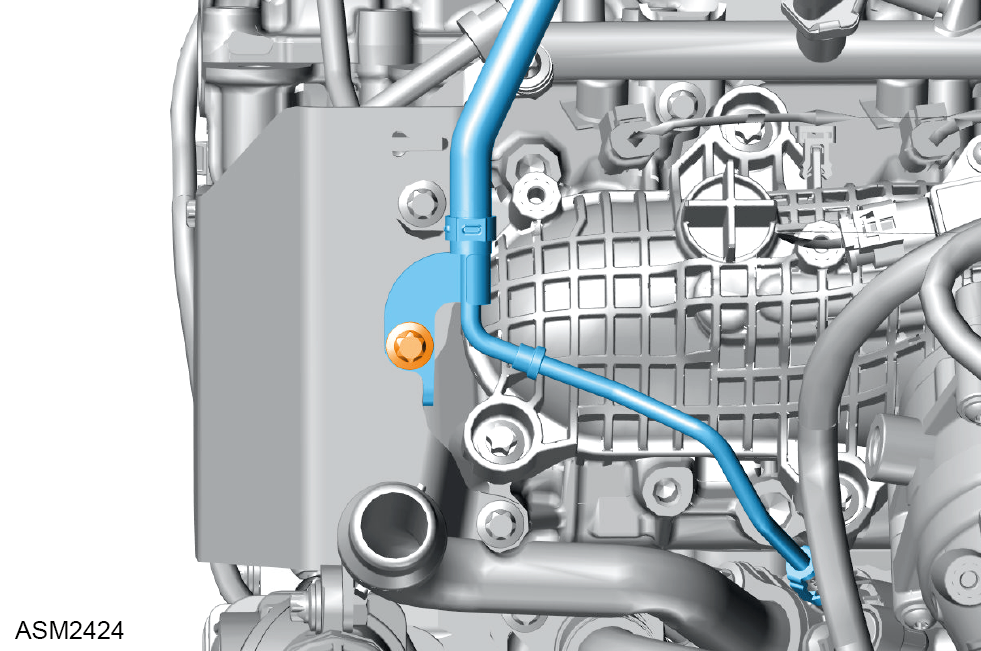
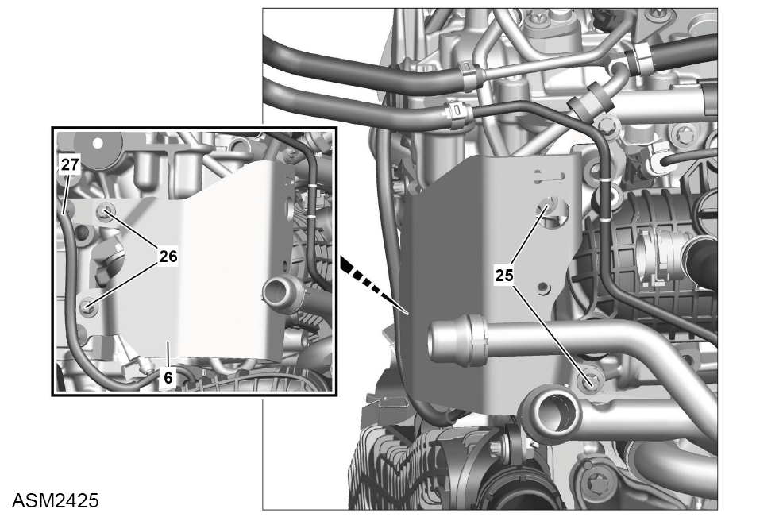
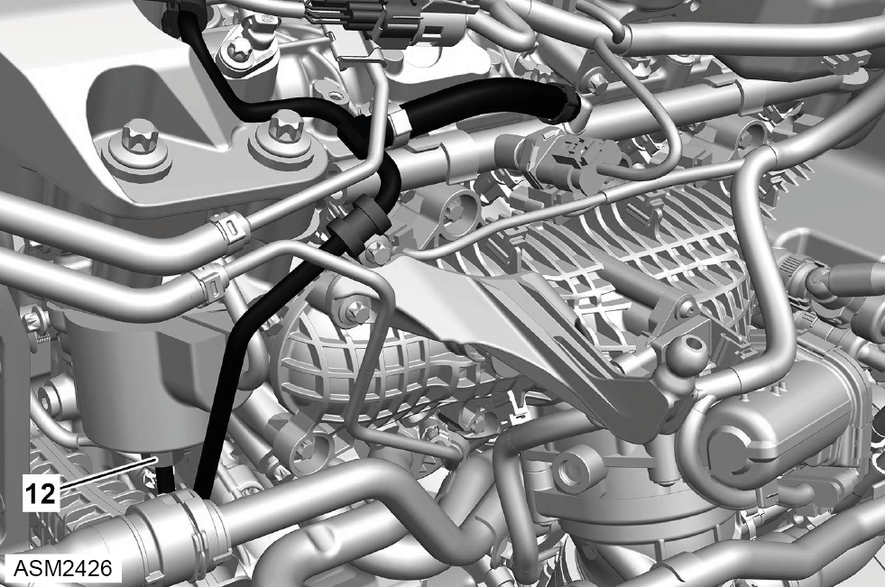
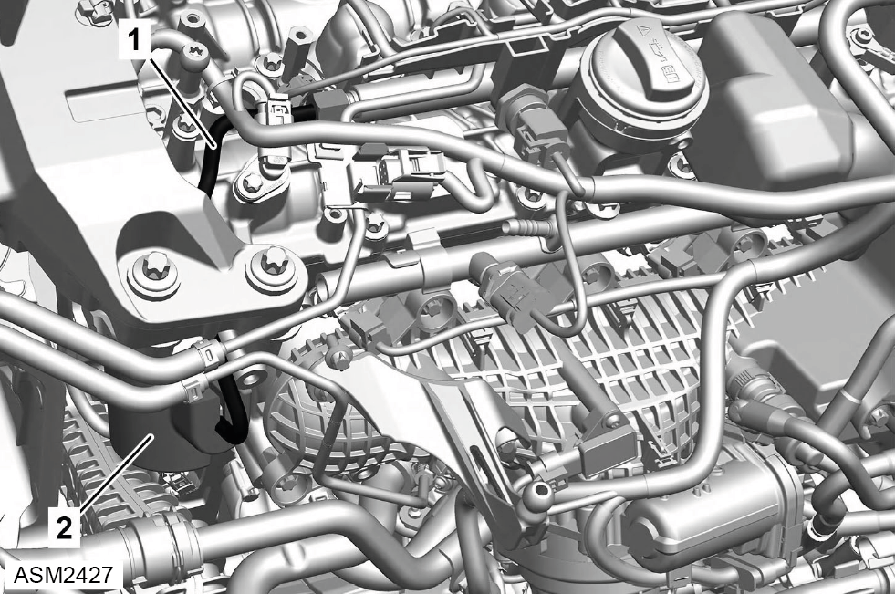
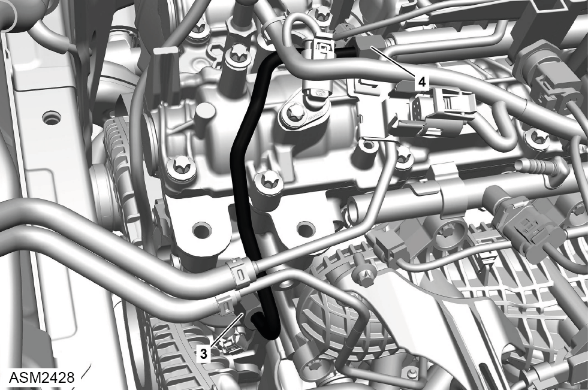
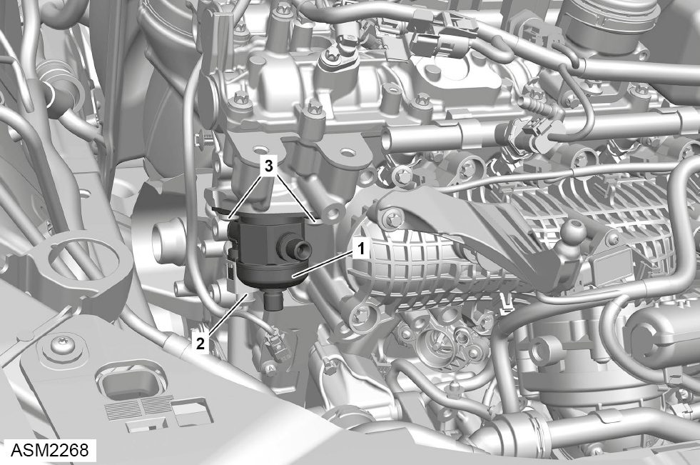
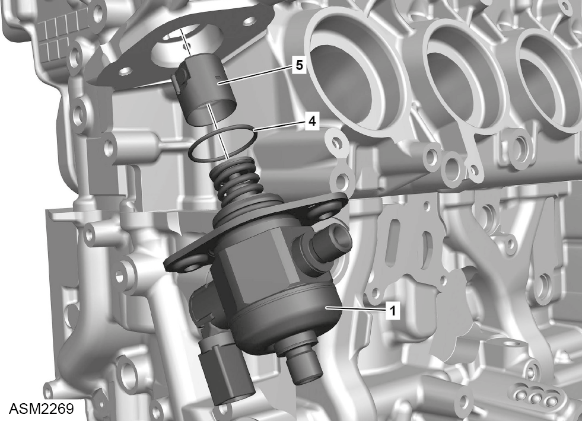

High Pressure Pump - 4 Cylinder
Print
Operation Code: 42.05.13-02
Important Information
 DANGER: Risk of explosion caused by fuel igniting, risk of poisoning caused by inhaling and swallowing fuel as well as risk of injury to eyes and skin caused by contact with fuel. Keep ignition sources away from work area. Use suitable and appropriately labelled containers for fuels. Wear protective clothing when handling fuel.
DANGER: Risk of explosion caused by fuel igniting, risk of poisoning caused by inhaling and swallowing fuel as well as risk of injury to eyes and skin caused by contact with fuel. Keep ignition sources away from work area. Use suitable and appropriately labelled containers for fuels. Wear protective clothing when handling fuel.
DANGER: Risk of explosion caused by fuel igniting. Risk of injury to skin and eyes caused by fuel spraying out at high pressure. Keep ignition sources away from work area. Do not carry out work on fuel system when it is pressurized.
Removal
- Depressurise fuel system. Refer to procedure.
- Disconnect battery. Refer to procedure.
- Remove engine mounting bracket - right side. Refer to procedure.

- Remove bolt securing pipe to high pressure pump heat shield.

- Release clips securing engine harness (27) to high pressure pump heat shield (6).
- Remove bolts (25 and 26) securing high pressure pump heat shield to engine. Torque 20 Nm.

- Release union nut (12) securing low pressure line to high pressure pump. Torque 22 Nm.
- Disconnect low pressure line from high pressure pump.
NOTE: Be prepared to catch any excess fluid.

- Remove noise insulation (2) from high pressure pump.

- Release union nut (3) securing low pressure line to high pressure pump. Torque 22 Nm.
- Disconnect high pressure line from high pressure pump.
NOTE: Be prepared to catch any excess fluid.

- Disconnect harness connector (2) from high pressure pump (1).
- Turn engine at the crankshaft in the direction of engine rotation to TDC marking.
- Remove bolts (3) (x2) securing high pressure pump to engine. Torque 15 Nm.
NOTE: To avoid damaging high pressure pump, loosen each bolt alternately by half a turn at a time.
- Remove high pressure pump.

- Remove and discard O-ring (4).
- Remove tappet element (5).
Installation
- Installation is the reverse of removal procedure except for the following:
- Inspect tappet element for damage, renew if necessary.
- Install the tappet element so that drive roller of tappet element sits on camshaft.
- Renew discarded O-ring.
NOTE: O-ring must not come into contact with oil before installing high pressure pump, otherwise O-ring will swell and leaks will occur.
- To avoid damaging high pressure pump, tighten each bolt alternately by half a turn at a time.